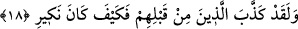

tahârette bulunmakla meşgul olmasına engel olabilir. Böylece şiddetli yağmur rahmet
biçiminde bir gazap olmuş olabilir. Akıllı kimseye düşen vaktini zayi etmemek,
meşguliyet gelip çatmadan boş vakitlerinin kıymetini bilmektir. Allah hem bizi ve hem
de sizi gaflet uykusundan uyandırsın.
18. Andolsun ki, onlardan öncekiler de (bunu) yalan saymışlardı; ama benim
karşılık olarak verdiğim azap nasıl olmuştu!
“Andolsun ki, onlardan öncekiler de” yâni Mekke kâfirlerinden önceki geçmiş
milletlerin Nûh, Ad kavmi ve bunların benzerleri kâfirler de “(bunu) yalan
saymışlardı.” Buraya kadar direk olarak kâfirlere hitâb edilirken bu âyet-i kerîmede
üçüncü şahıslara geçilmesi, onlardan yüz çevirmeyi ortaya koymak içindir. “Ama benim
karşılık olarak verdiğim azap nasıl olmuştu!” Yâni onlara azap indirmek sûretiyle
kendilerine karşı tepkim ve hareketlerini hoş karşılamayışım nasıl olmuştu? Bir başka
ifâdeyle benim onlara karşı tepkim son derece korkunç ve feci olmuştu. Bu ifâde,
sâdece onları yalanlamak için değil aynı zamanda kasem tekididir. Allah’ın kulunun
yaptığına karşı tepkisi, o kula zor bir iş yapması ve korkunç bir fiilde bulunmasıdır. Bu
âyet-i kerîmede aynı zamanda Peygamber Efendimiz (s.a.)’i tesellî, kavmini de tehdid
etme özelliği bulunmaktadır.
[15]. Müellifin verdiği bu bilgiler, o dönemdeki coğrafî bilgilere dayanmaktadır.